CARTOGRAFÍA GEOTÉCNICA
Métodos Estadísticos Bivariados
Prof. Edier Aristizábal

Contenido
- Métodos
- Modelos basados en datos
- Modelos bivariados
- Likelihood
- Statistical Index model
- Weights of Evidence
- Evidential belief function
- Certainty factor

Métodos Estadístico (data-driven)


Los métodos estadísticos se ajustan mejor para movimientos en masa:.
- Que no se mueven mucho de su área fuente
- Que no cambian significativamente su tamaño y geometría durante el movimiento (rotacional o traslacional).
Y menos aplicables a movimientos en masa:
- Movimientos en masa que viajan largas distancias (cientos de miles de metros)
- Que cambian significativamente su volumen y geometría durante su movimiento desde el área fuente a la zona depositacional.
- Para debris flow se recomienda generalmente modelos con base física.
La falta de algunos movimientos en masa en el inventario puede no representar un problema para el modelo de susceptibilidad, en tanto que el inventario tenga una razonable representación de la abundancia y distribución de los movimientos en la zona de estudio. Consistencia es mas importante que este completo.

Método Estadístico Bivariado
Cada mapa de factor (pendientes, geología, uso del suelo, etc,) es combinado con el mapa de distribución de movimientos en masa, y los valores de los pesos, basados generalmente en densidad de deslizamientos, son calculados para cada clase de la variable (rango de pendiente, unidad litológica, tipo de uso del suelo, etc, ).
- Los métodos estadísticos bivariados son una buena herramienta de aprendizaje para el analista encontrar qué factores o combinación de factores juegan un papel importante en la ocurrencia de movimientos en masa.
- Pueden ser combinados con métodos heurísticos
- Están basados en la asociación observada entre la distribución de los movimientos en masa y cada clase.
- Todos los parámetros tienen una importancia igual sobre la ocurrencia de deslizamientos.
- Las variables deben ser transformadas a categóricas
Procedimiento (i)
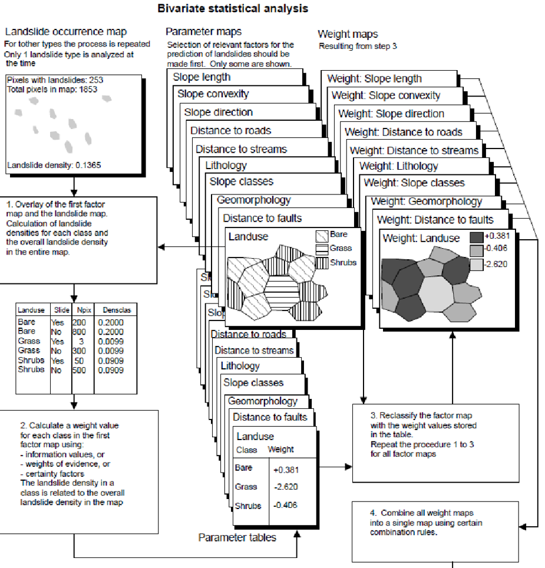Procedimiento (ii)
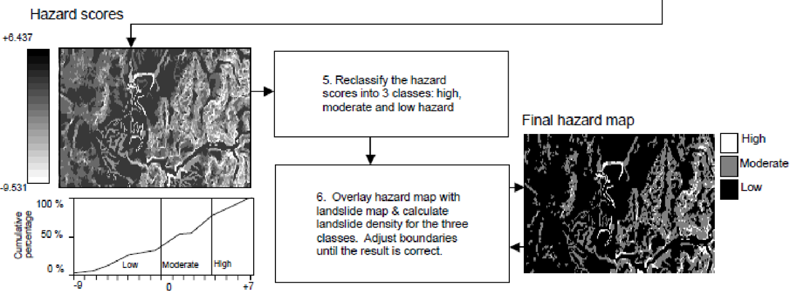 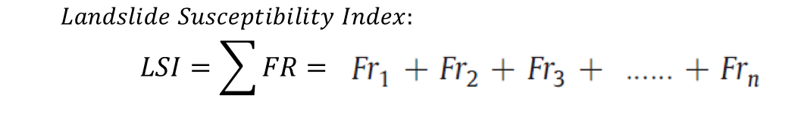Likelihood - Frequency Ratio Model
Ci es el número de celdas con valor i, Ct es el total de número de celdas de la zona de studio, n es el total de valores enteros en X.
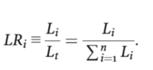Li es la cuenca de factor X con valor i que caen dentro del area de deslizamientos, Lt es el total de area con deslizamientos, n es el número de valores enteros de X el número de factores X.
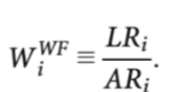La relación de frecuencia (FR) de la clase de cada factor condicionante es calculada dividiendo la relación de la ocurrencia de movimientos en masa por la relación del área de la clase.
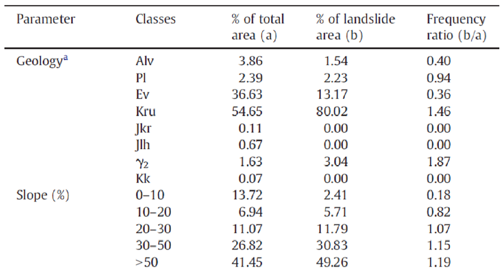

Statistical Index Model
El valor del peso para cada unidad categórica es definido como el logaritmo natural de la densidad de deslizamientos en una clase dividido la densidad de deslizamientos en toda la cuenca, de acuerdo con la siguiente ecuación:
Donde Wij es el pesoo dado a una cierta clase i de un parámetro j. Dij es la densidad de deslizamientos de la clase i del parámetro j. D es la densidad total de deslizamientos de todo el mapa. Nij es el número de pixeles en una cierta clase i del parametro j. N es el total de celdas que correpsonden a deslizamientos en todo el mapa. S es el total de pixeles del mapa.
Weights-of-Evidence (WoE)
La probabilidad priori P(c) es usualmente estimada empíricamente con el conocimiento acerca de la ocurrencia de un evento c en el pasado bajo iguales condiciones. Cuando la probabilidad de la evidencia P(x) es integrada en el cálculo de la probabilidad, se conoce como probabilidad condicionada o posterior P(c/x), es decir la probabilidad que un evento x ocurrirá bajo la presencia de una evidencia x. El teorema de Bayes integra ambas probabilidades.

Este método está basado en la teoría de probabilidad Bayesiana. En el cual para determinar la relativa importancia de los datos se utiliza los conceptos de probabilidad priori y posterior.
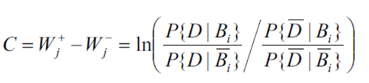Un peso positivo de W+ indica que la presencia del factor es favorable para la ocurrencia de deslizamientos, y la magnitud indica una correlación negativa. Un valor positivo de W- señala que la ausencia del factor de causa es favorable para la ocurrencia de deslizamientos, Contraste (C), y refleja la asociación espacial total entre una variable predictora y la ocurrencia de deslizamientos. Un valor de 0 indica que la clase considerada del factor de causa no es significativa en el análisis.

La probabilidad final (P) de cada celda es la suma de los pesos de cada parámetro y la probabilidad priori (Pp(s))
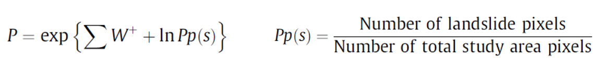- A1 es el número de pixeles con deslizamientos en una clase
- A2 es el número de pixeles con deslizamientos que no están presentes en dicha clase
- A3 es el número de pixeles en la clase en los cuales no hay deslizamientos
- A4 es el número de pixeles en la clase donde no hay deslizamientos y que tampoco el factor es presente.
Evidential Belief Funtion (EBF)
El modelo EBF (Dempster - Shafer) consiste en el grado de Belief (Bel), Disbelief (Dis), Uncertainty (Unc) y Plausibility (Pls), con valores entre 0 y 1. Bels y Pls representan el límite de probabilidad bayesiana inferior y superior. Mientras que, Pls es mayor o igual que Bel, y Unc es la diferencia entre ellos, indicando la incertidumbre del resultado (Ghosh & Carranza, 2010; Chen et al., 2016).
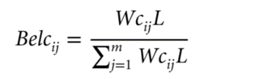 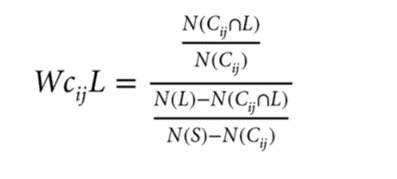 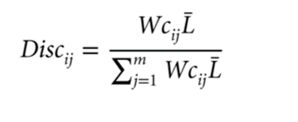 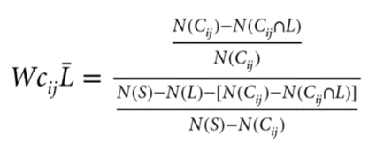 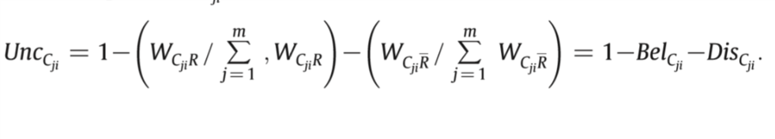Certainty Factor (CF)
El valor de CF varía entre -1 y +1. Un valor positivo significa un incremento en la certidumbre de la ocurrencia de deslizamientos, mientras que un valor negativo corresponde a una reducción en dicha certidumbre. Un valor cercano a 0 significa que la probabilidad priori es muy similar a la probabilidad condicional (Pourghsemi et al. 2012).
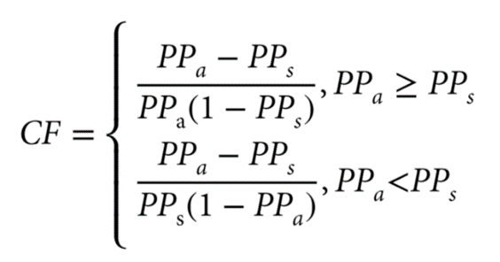Donde PPa es la probabilidad condicional de la ocurrencia de un deslizamiento en la clase a. PPs es la probabilidad priori del número total de deslizamientos en el área (Kanungo et al. 2011).